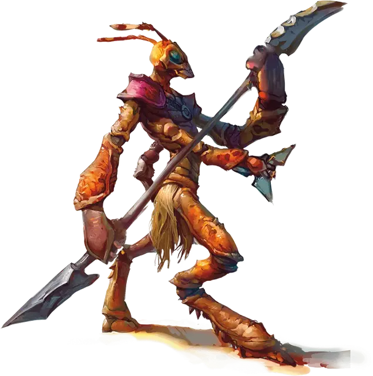

Три-крин
Thri-kreen
Средний Гуманоид (Три-крин), хаотично-нейтральный

Класс Доспеха 15 (природный доспех)
Хиты 33 (6к8 + 6)
Скорость 40 футов
| мод | спас | ||
|---|---|---|---|
| СИЛ | 12 | +1 | +1 |
| ЛОВ | 15 | +2 | +2 |
| ТЕЛ | 13 | +1 | +1 |
| мод | спас | ||
|---|---|---|---|
| ИНТ | 8 | −1 | −1 |
| МДР | 12 | +1 | +1 |
| ХАР | 7 | −2 | −2 |
Навыки Восприятие +3, Выживание +3, Скрытность +4
Чувства тёмное зрение 60 футов, пассивное Восприятие 13
Языки Три-кринский
Опасность 1 (200 опыта)
Бонус мастерства +2
Среда обитания Луг, Пустыня
Особенности
Панцирь-хамелеон. Три-крин может менять цвет панциря, чтобы сливаться с окружением. Благодаря этому он совершает с преимуществом проверки Ловкость (Скрытность), совершенные чтобы спрятаться.
Прыжок с места. Три-крин совершает прыжки в длину на расстояние до 30 футов и прыжки в высоту на расстояние до 15 футов, хоть с разбегом, хоть без него.
Оружие и псионика три-кринов. Некоторые три-крины используют особое воинское оружие. Гитка это двуручное древковое оружие с клинками на каждом конце. Чаткча это плоское оружие с тремя треугольными лезвиями (легкое метательное оружие).
Три-крин, вооруженный гиткой и чаткчей, получает следующие варианты действий:
Мультиатака. Три-крин совершает две атаки гиткой или две атаки чаткчей.
Гитка. Рукопашная атака оружием: +3 к попаданию, досягаемость 5 футов, одна цель. Попадание: Рубящий урон 5 (1к8 + 1).
Чаткча. Дальнобойная атака оружием: +4 к попаданию, дистанция 30/120 футов, одна цель. Попадание: Рубящий урон 5 (1к6 + 2).
У некоторых три-кринов есть псионические способности, помогающие им охотиться и общаться с чужаками.
У псионического три-крина есть телепатия с радиусом 60 футов и следующая дополнительная особенность:
Врождённое колдовство (псионика). Базовой характеристикой три-крина является Мудрость. Три-крин может накладывать следующие заклинания, не нуждаясь ни в каких компонентах:
• Неограниченно: волшебная рука [mage hand] (рука невидима);
• 2/день каждое: магическое оружие [magic weapon], размытый образ [blur];
• 1/день: невидимость [invisibility] (только на себя).
Действия
Мультиатака. Три-крин совершает две атаки: одну укусом, и одну когтями.
Укус. Рукопашная атака оружием: +3 к попаданию, досягаемость 5 футов, одно существо. Попадание: Колющий урон 4 (1к6 + 1), и цель должна преуспеть в спасброске Телосложения Сл 11, иначе станет отравленной на 1 минуту. Если спасбросок провален на 5 или больше единиц, цель также парализована, пока отравлена таким образом. Отравленная цель может повторить спасбросок в конце каждого своего хода, оканчивая эффект на себе при успехе.
Когти. Рукопашная атака оружием: +3 к попаданию, досягаемость 5 футов, одна цель. Попадание: Рубящий урон 6 (2к4 + 1).
Описание
Три-крины бродят по пустыням и саваннам, избегая других рас.
Общение три-кринов. Три-крины используют язык без слов. Для передачи эмоций и реакций три-крины щелкают жвалами и шевелят усиками, давая понять другим три-кринам, что именно они думают или ощущают. Другие существа считают такой способ коммуникации сложным для понимания и невозможным для копирования.
Когда три-крины вынуждены контактировать с представителями других разумных рас, они пытаются прибегать к альтернативным методам коммуникации, таким как рисунки, сделанные на песке, или выполненные из веточек и травинок.
Ограниченные эмоции. Три-крины способны испытывать весь спектр эмоций, но они не столь склонны к эмоциональным вспышкам как люди. Три-крины с псионическими способностями часто демонстрируют более широкий диапазон эмоций, особенно если они часто контактируют либо живут рядом с людьми или другими очень эмоциональными существами.
Изоляционисты и странники. Три-крины рассматривают всех окружающих существ как потенциальную еду, и, в частности, любят вкус эльфийской плоти. Если существо может быть полезно им в ином, нежели еда, качестве, три-крины вряд ли нападут на него сразу же. Три-крины убивают ради выживания и никогда — ради развлечения.
Неспящие. Три-кринам не требуется сон, и они могут отдыхать, всегда оставаясь начеку, будучи способными выполнять несложные задачи. Возможно, отсутствие сна является одной из основных причин крайне короткого срока их жизней, ведь средняя продолжительность жизни три-крина составляет всего лишь около тридцати лет.